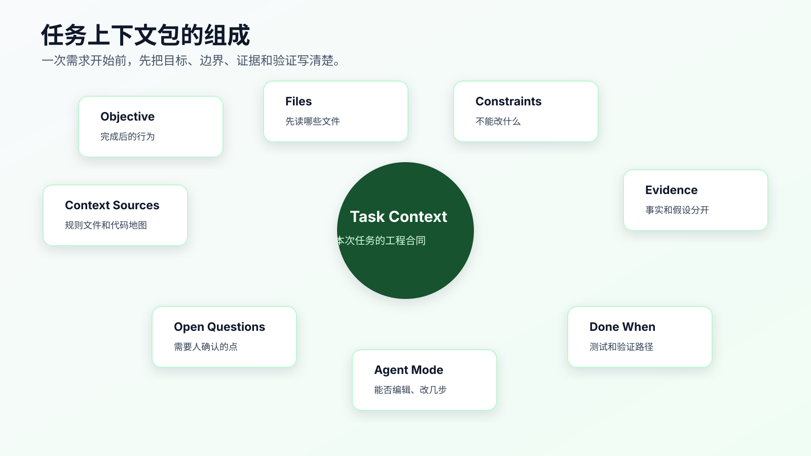

任务上下文包：一次需求到底该给 AI 什么
一次需求开始前，给 AI 的材料不是越多越好，也不是越少越好。
真正要给的是一份能约束行动的任务上下文包：目标、范围、相关文件、禁止修改、已知证据、验证方式、开放问题和 Agent 授权级别。
很多 AI Coding 失控，不是因为 Agent 不会写代码，而是因为任务开始时缺少合同。
你只说：
帮我修一下 session 过期后第一次提交失败的问题。
Agent 只能自己猜：是前端表单问题？请求封装问题？token 存储问题？登录接口问题？还是后端返回问题？它猜得快，改得也快，但方向不一定对。
任务上下文包的目的，就是在实现前把这些判断显式化。它可以由 Agent 根据 issue、日志、代码搜索和上下文审计报告生成草稿，但硬约束、业务风险和授权级别必须由程序员确认。

任务上下文包不是 PRD
PRD 讲需求背景、用户价值、功能范围。任务上下文包讲一次代码改动怎么安全开始。
它不需要长。中等风险任务，一页就够。
一份有效的任务上下文包要回答八个问题：
| 问题 | 作用 |
|---|---|
| 要改变什么行为 | 防止实现跑偏 |
| 哪些行为不能变 | 防止破坏兼容 |
| 先读哪些文件 | 防止乱搜和漏入口 |
| 哪些文件暂时不改 | 防止误改 demo、legacy、generated |
| 已知证据是什么 | 区分事实和猜测 |
| 怎么证明完成 | 让验证在实现前出现 |
| 还有哪些未确认问题 | 防止 Agent 自行拍板 |
| Agent 当前授权级别 | 控制它能否直接编辑 |
这八个问题比“写一个好 prompt”更重要。
一个坏输入长什么样
看一个常见输入：
登录过期后提交表单失败，你帮我修一下。
不要影响其他功能。
它的问题很多：
- “登录过期”没有复现路径。
- “提交表单”没有入口文件。
- “失败”没有错误日志。
- “不要影响其他功能”太空。
- 没有验证命令。
- 没有限制是否可以改登录接口。
- 没说明是否可以新增依赖。
Agent 看到这段话，会按自己搜到的第一条线索行动。
更好的输入是：
# Task Context
## Objective
session 过期后重新登录，第一次提交资料表单应该成功，不应出现重复错误 toast。
## Files AI Should Inspect First
- `src/forms/ProfileForm.tsx`: form submit entry.
- `src/auth/request.ts`: HTTP 401 handling.
- `test/auth-refresh.test.ts`: related auth refresh tests.
## Constraints
- Do not change login API contract.
- Do not change token storage format.
- Do not add runtime dependencies.
- Do not swallow non-401 errors.
## Evidence
- Error log: `401 refresh token missing`.
- Repro path: login -> wait for session expiration -> refresh page -> submit form.
## Done When
- `npm test -- auth-refresh` passes.
- `npm run typecheck` passes if request types changed.
- Browser path passes: login -> expire session -> refresh -> submit.
## Agent Mode
First inspect files and produce a plan. Do not edit before plan approval.
这份材料并不复杂，但它把 Agent 的行动空间限定住了。
任务上下文包的八个部分
第一部分：Objective。
目标要写成行为，而不是愿望。
差：
优化登录体验。
好：
session 过期后重新登录，第一次提交资料表单应该成功，不应出现重复错误 toast。
行为越具体，验证越容易。
第二部分：Scope。
范围要写候选文件和原因。
## Files AI Should Inspect First
- `src/forms/ProfileForm.tsx`: form submit entry.
- `src/auth/request.ts`: HTTP 401 handling.
- `test/auth-refresh.test.ts`: related tests.
不要只列路径。路径后面要写为什么相关。
第三部分：Constraints。
约束要写硬边界。
## Constraints
- Do not change login API contract.
- Do not change token storage format.
- Do not add runtime dependencies.
- Do not edit generated files under `src/generated/`.
这比“不要影响其他功能”有效得多。
第四部分：Known Evidence。
证据是已经确认的事实，不是猜测。
## Known Evidence
- Error log: `401 refresh token missing`.
- Current behavior: first submit fails after session refresh.
- Refresh API itself returns 200 in local reproduction.
如果只是猜测，要标成假设：
## Hypotheses
- The original request may not be retried after refresh.
- Concurrent refresh may drop pending submit.
事实和假设不能混。
第五部分：Verification。
验证要在实现前写。
## Done When
- `npm test -- auth-refresh` passes.
- `npm run typecheck` passes.
- Browser path passes: login -> expire session -> refresh -> submit.
如果没有自动测试，也要写手动验证：
- Manual check: Network shows refresh request followed by one retry of original submit.
第六部分：Open Questions。
有不确定就写出来。
## Open Questions
- Should original request retry exactly once or follow global retry policy?
- How should concurrent submits behave during refresh?
开放问题的价值是阻止 Agent 自己拍板。
第七部分：Agent Mode。
明确它当前能做什么。
## Agent Mode
- Inspect and plan only.
- Do not edit before plan approval.
- If scope must expand, stop and explain.
低风险任务可以写：
Agent may implement directly, but must keep diff scoped and report commands.
第八部分：Context Sources。
告诉 Agent 先读哪些长期资产。
## Context Sources
- Project rules: `AGENTS.md`
- Code map: `docs/ai-coding/code-map.md`
这能把长期规则和单次任务接起来。
用 Agent 或工具生成草稿
任务上下文包不应该靠人从空白文档开始写。先让 Agent 根据搜索结果生成草稿，或者用配套工具生成骨架。
配套代码仓库 DavidDingXu/learn-ai-coding 的工具 module 里有一个最小命令：
cd learn-ai-coding/ai-coding-workflow-kit
node src/cli.js task-context \
--title "修复 session 过期后首次提交失败" \
--files "src/auth/request.ts,src/forms/ProfileForm.tsx,test/auth-refresh.test.ts"
当前输出会是：
# Task Context: 修复 session 过期后首次提交失败
## Goal
- Describe the behavior change before asking AI to edit code.
## Files AI Should Inspect First
- src/auth/request.ts
- src/forms/ProfileForm.tsx
- test/auth-refresh.test.ts
## Constraints
- List APIs, dependencies, generated files, or behaviors that must not change.
## Done When
- List tests, commands, UI checks, or manual verification evidence.
## Questions Before Coding
- Which existing behavior must remain compatible?
- Which test or command proves the change?
- What should AI do if it needs to expand the diff?
这个命令不会替你判断业务，也不会自动知道风险。它的作用是让 Agent 和人都别忘了最关键的几个字段。
复杂项目里，真正重要的是后续确认：
- 目标行为。
- 不能改变的接口和兼容规则。
- 错误日志和复现步骤。
- 验证命令。
- Agent 授权级别。
工具和 Agent 生成草稿，程序员确认工程判断。
草稿生成后怎么验收
Agent 写出的任务上下文包，不能直接当合同。
你至少要做一次验收。
第一，看 Objective 是否是行为。
“优化登录体验”不合格。 “session 过期后重新登录，第一次提交资料表单应该成功”才合格。
行为目标应该能被测试、页面路径、接口响应或日志证明。
第二，看 Files 是否有理由。
下面这种只列路径不合格：
- `src/auth/request.ts`
- `src/forms/ProfileForm.tsx`
要写成：
- `src/auth/request.ts`
- reason: handles HTTP 401 and token refresh.
- `src/forms/ProfileForm.tsx`
- reason: user-visible submit entry.
第三，看 Constraints 是否能阻止越界。
“不要影响其他功能”不合格。 “不改变登录 API contract，不改变 token storage format，不吞掉非 401 错误，不新增 runtime dependency”才有约束力。
第四，看 Evidence 是否区分事实和假设。
错误日志、复现路径、命令输出、截图是事实。 “可能是 refresh 没重试”是假设。
它们必须分开写。
第五，看 Done When 是否能执行。
“功能正常”不合格。
“npm test -- auth-refresh 通过，浏览器路径 login -> expire session -> refresh -> submit 通过，Network 显示 refresh 后原请求重试一次”才是可验证完成。
第六，看 Agent Mode 是否明确。
高风险任务不能只写任务上下文，还要写授权边界：
## Agent Mode
Inspect and plan only.
Do not edit files before plan approval.
If scope expands beyond auth request wrapper and profile form submit path, stop.
验收可以用下面这段话让 Agent 自检：
请检查这份 Task Context 是否足以授权你进入实现。
逐项回答：
1. Objective 是否能被验证？
2. Files 是否都写了用途和证据？
3. Constraints 是否足够阻止越界？
4. Evidence 和 Hypotheses 是否分开？
5. Done When 是否包含可执行命令或操作路径？
6. Agent Mode 是否明确说明你能不能编辑文件？
如果任一项不满足，请只修订 Task Context，不要写代码。
这一步能避免很多“任务包写了，但还是乱改”的问题。
不同材料怎么合并进任务上下文
一次真实任务的材料经常来自多个地方。
用户描述
issue 评论
错误日志
截图
代码搜索结果
代码地图
项目规则
官方文档
历史 PR
不要把这些材料按原样塞进上下文包。它们的可信度不同，用法也不同。
可以按下面方式合并。
用户描述进入 Objective 和 Open Questions。
用户说“提交失败”，只能说明现象；不能直接说明根因。要把它写成目标和待确认问题：
## Objective
session 过期后重新登录，第一次提交资料表单应该成功。
## Open Questions
- submit failure is caused by frontend retry, backend 401, or token storage?
错误日志进入 Known Evidence。
日志要带上下文，不要只贴一句：
## Known Evidence
- Browser Network: first submit returns 401.
- Console log: `refresh token missing`.
- Refresh endpoint returns 200 in local reproduction.
代码搜索结果进入 Files To Inspect First 和 Files Not To Edit Initially。
## Files AI Should Inspect First
- `src/auth/request.ts`
- evidence: contains 401 handling and refresh call.
## Files Not To Edit Initially
- `src/generated/api-client.ts`
- evidence: generated client; inspect only.
项目规则进入 Context Sources 和 Constraints。
如果 AGENTS.md 写了不能新增依赖，就不要只在 Context Sources 里引用，要把本任务相关约束拉进 Constraints。
官方文档进入 Reference，不直接覆盖项目事实。
## Reference
- Framework docs say retry middleware can wrap request calls.
- Current project uses a custom request wrapper; follow current project contract first.
历史 PR 进入 Hypotheses 或 Background，不能直接变成当前事实。
## Background
- Historical PR suggests token storage changed in an earlier refactor.
- Need current code confirmation before editing.
合并材料时，最重要的是保持层级。事实、假设、约束、参考资料不能混在一个段落里。
任务上下文包和权限控制
任务上下文包不是纯文档，它也是权限控制。
同一个需求，不同上下文包会给 Agent 完全不同的权限。
低风险写法：
## Agent Mode
Direct implement allowed.
Keep diff limited to `src/pages/invoice/ListPage.tsx`.
Run focused UI test or provide screenshot.
中风险写法：
## Agent Mode
Plan first.
Human approves plan before editing.
Implement one step at a time.
高风险写法：
## Agent Mode
Analysis only.
Do not edit files.
Do not suggest production execution commands.
Output confirmed facts, hypotheses, and next verification action.
这里要明确一点：Agent Mode 不是礼貌提示，是任务边界。
如果 Agent 在 Inspect only 模式下开始改文件，这不是“它很主动”，而是违反任务合同。应该停下来回滚或让它解释原因。
什么时候需要升级到 SDD 或 OpenSpec
任务上下文包适合一次改动开始前的约束，但不是所有复杂需求都应该停留在一页上下文里。
下面这些信号说明该升级：
- 需求会持续多天。
- 需要改多个模块或多个仓库。
- 涉及公开 API、状态机、权限、金额、数据迁移。
- 需要多人 review。
- 需要把当前行为和未来行为同时记录下来。
- 任务会拆成多个可并行或可排期的小步骤。
这时要从 Task Context 升级到规格驱动：
requirements.md 讲清楚用户行为和验收条件。
design.md 讲清楚技术取舍、兼容性和数据流。
tasks.md 把实现拆成可验证的小 diff。
OpenSpec changes/ 把拟议变更和当前系统行为分开管理。
不要把超大需求硬塞进一个任务上下文包。上下文包是启动合同，不是完整需求治理工具。
不同风险任务怎么调整上下文包
低风险任务可以很短。
# Task Context
## Objective
把发票列表空状态文案从“暂无数据”改成“暂无发票”。
## Files
- `src/pages/invoice/ListPage.tsx`
## Constraints
- 不改查询逻辑。
- 不改组件结构。
## Done When
- `git diff` only shows copy change.
- 页面空状态显示正确。
中等风险任务要完整。
# Task Context
## Objective
session 过期后重新登录，第一次提交资料表单应该成功。
## Agent Mode
Inspect and plan first. Human approves plan before editing.
高风险任务要更严格。
# Task Context
## Objective
分析订单 paid 状态偶发回退原因。
## Agent Mode
Analysis only. Do not edit files.
## Hard Constraints
- Do not change order status transition logic.
- Do not alter payment callback behavior.
- Do not write migration scripts.
## Required Output
- Confirmed facts.
- Excluded hypotheses.
- Remaining hypotheses.
- Next smallest verification action.
- Questions for business owner.
同样叫任务上下文包，风险不同，授权级别不同。
Agent Mode 是很多人漏掉的关键
任务上下文包里一定要写 Agent Mode。
常用模式有四种：
| 模式 | 用法 |
|---|---|
| Inspect only | 只读文件、搜索、整理事实 |
| Plan first | 先给计划，人确认后再实现 |
| Implement one step | 只执行计划中的一小步 |
| Direct implement | 低风险任务可直接实现 |
例如：
## Agent Mode
Inspect only. Do not edit files.
或者：
## Agent Mode
Implement step 1 only. Stop after diff summary and verification result.
没有 Agent Mode，Agent 会默认自己决定行动级别。
这在低风险任务里可能没问题，在中高风险任务里很危险。
任务上下文包如何和代码地图配合
代码地图是长期导航，任务上下文包是单次任务合同。
代码地图告诉 Agent：
auth 模块在哪里，测试在哪里，generated 不要改。
任务上下文包告诉 Agent：
这次只修 session 过期后首次提交失败，先读这三个文件，不改 token 存储。
任务上下文包应该引用代码地图：
## Context Sources
- Code map: `docs/ai-coding/code-map.md`
- Project rules: `AGENTS.md`
但不要复制整份地图。复制会造成过期和冲突。
任务上下文包如何和项目规则配合
项目规则写长期约束：
- Do not add dependencies without approval.
- Do not edit generated files.
- Run focused tests for behavior changes.
任务上下文包写本次约束：
- Do not change login API contract.
- Do not change token storage format.
- Verify expired-session submit path.
如果任务上下文和项目规则冲突，要先停下来。
可以在任务包里写：
## Conflict Handling
If task instructions conflict with project rules, stop and explain the conflict before editing.
这条规则能防止 Agent 自己在冲突里选一边。
任务上下文包放在哪里
不用固定。
可以放：
- issue 描述。
- PR 描述。
- 本地
docs/ai-coding/tasks/<date>-<slug>.md。 - 任务系统评论。
- Agent 对话第一条消息。
关键是它要能被复查。
如果是小任务，直接放对话里就行。 如果是中高风险任务，建议落到文件或 issue 里。 如果任务会拆多天，建议放仓库内文档，方便换对话和复盘。
一个轻量目录可以是：
docs/ai-coding/tasks/
├── auth-refresh-submit.md
└── order-status-rollback.md
任务结束后，不一定长期保留所有任务包。重要任务可以归档，普通任务可以只把规则和代码地图更新回长期资产。
常见错误
错误一：只写目标，不写不能改什么。
AI 很容易为了解决一个点改动接口、依赖或状态结构。约束必须写。
错误二：只写相关文件，不写为什么相关。
路径后面写一句用途。否则 Agent 不知道优先级。
错误三：把猜测写成事实。
“可能是 refresh 没重试”要写到 Hypotheses，不要写到 Known Evidence。
错误四：实现前不写验证。
验证必须前置。否则实现完成后，Agent 会挑最容易通过的命令证明自己。
错误五：不给 Agent 授权级别。
同一份上下文，Inspect only 和 Direct implement 的风险完全不同。
一份高质量任务上下文包
下面是一份可以直接迁移的版本：
# Task Context: expired session first submit failure
## Objective
After session expiration and re-login, the first profile form submit should succeed.
No duplicate error toast should appear.
## Context Sources
- Project rules: `AGENTS.md`
- Code map: `docs/ai-coding/code-map.md`
## Files AI Should Inspect First
- `src/forms/ProfileForm.tsx`
- form submit entry
- `src/auth/request.ts`
- HTTP 401 handling and retry behavior
- `test/auth-refresh.test.ts`
- existing auth refresh tests
## Files Not To Edit Initially
- `src/auth/token-storage.ts`
- token storage format is out of scope
- `src/generated/api-client.ts`
- generated file
## Constraints
- Do not change login API contract.
- Do not change token storage format.
- Do not add runtime dependencies.
- Do not swallow non-401 errors.
## Known Evidence
- Error log: `401 refresh token missing`.
- Repro path: login -> wait for expiration -> refresh page -> submit form.
## Hypotheses
- Original request may not be retried after refresh.
- Pending submit may be dropped during refresh.
## Done When
- Add or update regression test for expired-session submit.
- `npm test -- auth-refresh` passes.
- `npm run typecheck` passes if request types change.
- Browser path passes: login -> expire session -> refresh -> submit.
## Open Questions
- Should original request retry exactly once or follow global retry policy?
- How should concurrent submits behave during refresh?
## Agent Mode
Inspect and plan first. Do not edit before plan approval.
If scope must expand, stop and explain why.
这份材料已经足够让 Agent 开始侦察，但还没有授权它直接改。
完成后怎么回收上下文
任务结束后，任务上下文包不要原封不动塞进长期规则。
要做一次回收：
## Reuse After Completion
- 是否新增项目规则？
- 是否更新代码地图？
- 是否沉淀验证命令？
- 是否记录常见失败分类？
- 是否有可复用测试模式？
例如这次任务结束后，可能只需要沉淀两条：
AGENTS.md:
- Do not swallow non-401 errors when changing auth retry logic.
code-map.md:
- Auth refresh tests: `npm test -- auth-refresh`
任务包本身可以归档，但长期资产只吸收稳定规则。
任务上下文包怎么进入 PR
很多团队的问题不是没有上下文，而是上下文只留在 AI 对话里。
如果这次改动需要 review，任务上下文包应该至少有一部分进入 PR 描述。
可以压缩成下面这种格式：
## Task
session 过期后重新登录，第一次提交资料表单应该成功。
## Constraints
- 不改变登录 API contract。
- 不改变 token storage format。
- 不吞掉非 401 错误。
## Files
- `test/auth-refresh.test.ts`: regression coverage.
- `src/auth/request.ts`: 401 refresh and retry path.
## Verification
- `npm test -- auth-refresh`: passed.
- `npm run typecheck`: passed.
- Browser path: login -> expire session -> refresh -> submit, passed.
## Residual Risk
- 没有验证第三方 SSO staging path。
这不是把任务上下文包完整复制进 PR，而是把 reviewer 必须知道的边界带过去。
reviewer 看到这几段，就能知道：
- 这次要改什么。
- 哪些行为不能改。
- 为什么只改这些文件。
- 用什么证明结果。
- 哪些风险还没覆盖。
AI 生成的 PR 最怕“代码很多，解释很少”。任务上下文包能把解释补回来。
任务上下文包和 issue 的关系
issue 通常描述问题，任务上下文包描述如何安全开始改代码。
一个 issue 可能是：
用户反馈 session 过期后重新登录，第一次提交资料表单失败。
它还不是任务上下文包。你还需要补：
## Engineering Context
- suspected path:
- constraints:
- known evidence:
- verification:
- agent mode:
如果 issue 本身写得很好，可以直接把任务上下文包放在 issue 描述里。如果 issue 很长、讨论很多，建议在开始开发前由 Agent 生成一个精简 Task Context，并由人确认。
不要让 Agent 直接读取几十条 issue 评论后开始实现。issue 评论里常常混有旧猜测、过期截图、被否定方案和无关讨论。先收敛成任务上下文包。
任务上下文包的反例
下面这份看起来完整，但不合格：
# Task Context
## Goal
修复登录问题，提升用户体验。
## Files
- `src/auth/`
- `src/forms/`
## Constraints
- 不要影响其他功能。
## Done When
- 功能正常。
## Agent Mode
请谨慎修改。
问题很具体：
- Goal 不是可验证行为。
- Files 是目录，不是入口和证据。
- Constraints 不可执行。
- Done When 没有命令或操作路径。
- Agent Mode 没有权限边界。
把它改成合格版本：
# Task Context
## Objective
session 过期后重新登录，第一次提交资料表单应该成功，不出现重复错误 toast。
## Files AI Should Inspect First
- `src/forms/ProfileForm.tsx`
- form submit entry.
- `src/auth/request.ts`
- HTTP 401 handling and retry behavior.
- `test/auth-refresh.test.ts`
- existing refresh tests.
## Constraints
- Do not change login API contract.
- Do not change token storage format.
- Do not add runtime dependencies.
- Do not swallow non-401 errors.
## Done When
- Regression test covers expired-session first submit.
- `npm test -- auth-refresh` passes.
- Browser Network shows refresh followed by one retry of original submit.
## Agent Mode
Inspect and plan first. Do not edit before plan approval.
这才是一份可以授权 Agent 做侦察和计划的上下文。
上下文包过期了怎么办
任务拖得越久，上下文包越容易过期。
常见过期信号：
- 计划里的文件已经被别人改过。
- 任务目标发生变化。
- 测试命令变化。
- Agent 发现真实入口不是原来写的入口。
- 新证据排除了原来的主要假设。
上下文包过期时，不要直接在原文下面继续追加。先更新关键段落：
## Context Update
Date:
Changed:
- Original hypothesis `token storage missing` is excluded.
- New confirmed fact: original submit request is not replayed.
Current Next Action:
- Add retry regression test before implementation.
如果变化很大，就生成新版本。不要让 Agent 同时读旧上下文和新上下文，然后自己判断哪个优先。
上下文包不是越多越好。它必须保持当前有效。
常见问题
每个任务都要写任务上下文包吗？
不用。低风险小改可以写很短，甚至只写对话里的几行。中高风险任务建议写完整。
任务上下文包是不是会降低速度？
低风险任务可能会。但中高风险任务里，它减少的是返工和误改。写 5 分钟上下文，通常比清理一个大 diff 便宜。
可以让 AI 帮我写任务上下文包吗？
应该优先让 AI 写草稿。它可以根据 issue、日志、代码搜索结果和上下文审计报告整理材料。程序员不要把草稿当最终合同，重点确认硬约束、业务风险、验证命令和授权级别。
任务上下文包和 SDD 有什么区别？
任务上下文包更轻，适合一次改动开始前的上下文和约束。SDD 会进一步把需求、设计和任务拆成规格驱动流程，适合更复杂需求。
任务包里要不要贴代码片段？
尽量贴路径和搜索结果摘要，不要大段复制代码。让 Agent 去真实仓库读文件。只有外部系统、日志或无法访问材料才需要贴片段。
可以先实践的一件事
下次中等风险任务开始前，先写这五行：
Objective:
Files AI should inspect first:
Constraints:
Done when:
Agent mode:
如果五行写不出来，就不要让 AI 实现。先让它帮你做侦察和澄清。
任务上下文包的价值，是让 AI 在写代码前知道自己处在哪个边界里。项目规则解决长期约束，代码地图解决导航，任务上下文包解决本次任务合同。
接下来会讲上下文污染与上下文清理。一次任务推进过程中，旧假设、失败尝试和无关材料会不断进入对话；如果不清理，Agent 很容易把已经被否定的内容当成事实继续执行。
可复查资料
- OpenAI Codex 最佳实践：https://developers.openai.com/codex/learn/best-practices
- OpenAI Codex
AGENTS.md指南：https://developers.openai.com/codex/guides/agents-md - Anthropic Claude Code memory：https://code.claude.com/docs/en/memory
- GitHub Copilot repository instructions：https://docs.github.com/en/copilot/how-tos/copilot-on-github/customize-copilot/add-custom-instructions/add-repository-instructions